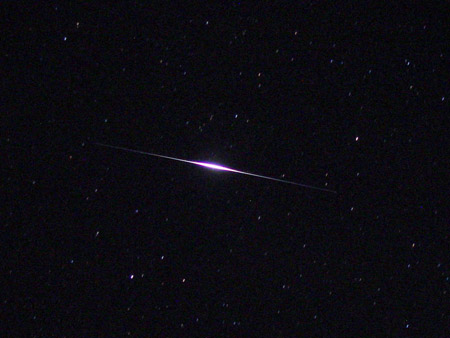
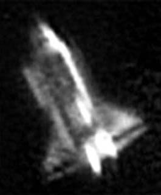

Look up at a clear night sky and wait a few minutes. Before long you'll see a "star" gliding steadily across the background of the constellations — no blinking, no changing direction, just a smooth, silent arc. You're watching one of the many thousands of satellites orbiting Earth.
A Brief History
Satellites visible to the naked eye are a relatively new phenomenon for sky watchers. Among the earliest easy ones to spot were the Echo series — giant Mylar balloons intended to reflect radio signals, launched beginning in 1960. Their sheer size made for impressive reflections.
The Iridium constellation introduced a different kind of brightness. These medium-size communication satellites had large, highly polished door-sized antenna panels. When the sun hit them at just the right angle, they produced brilliant "flares" lasting a few seconds — sometimes reaching magnitude −8, far brighter than Venus. Most Iridium satellites have now been replaced by a newer generation without the flat panels, but the older ones still produced memorable shows during their operational years.

Orbital Mechanics at a Glance
You can learn a lot about a satellite simply by watching its path and speed:
- North–South (polar) orbits allow the satellite to see virtually every point on Earth over time — ideal for weather satellites and spy satellites. You'll see these pass from horizon to horizon over the poles.
- East–West (equatorial/inclined) orbits take advantage of Earth's rotation, requiring less fuel to reach orbit. The International Space Station uses this type of orbit.
Speed and Altitude
Here's a counterintuitive fact: higher orbits appear slower. A satellite in very low orbit — like the Space Station at roughly 250 miles up — moves quickly enough to cross the whole sky in just a few minutes. A weather satellite at 600 miles appears to drift more slowly, even though it's actually traveling at tremendous speed. The closer the object, the faster it seems to move against the sky background. Higher means "slower" to our eyes.

The ISS and Starlink Trains
Today's most exciting satellite-watching opportunities include:
- International Space Station (ISS) — the brightest satellite in the sky, reaching magnitude −3.5 or brighter. It moves fast (the whole sky in ~5 minutes) and is easy to recognize by its steady, yellowish-white glow. Visible from all inhabited latitudes.
- Starlink trains — SpaceX's Starlink satellites are often visible as a string of equally-spaced dots moving in formation shortly after a launch. Over time they spread out into individual satellites. There are now thousands of them, and several are often visible on any given clear night.
- Tiangong (China Space Station) — almost as bright as the ISS and visible from Oregon depending on the orbital period.
Predicting Passes
Satellite viewing doesn't have to rely on chance. The orbital mechanics are precise enough that passes can be predicted minutes to days in advance.
- Heavens-Above.com — enter your location and get pass predictions for the ISS and thousands of other satellites. One of the oldest and most reliable resources.
- NASA Spot the Station — ISS-focused with email/text alerts for your location.
- SkySafari, Stellarium, or similar apps — many smartphone astronomy apps include real-time satellite tracking with augmented-reality overlays.